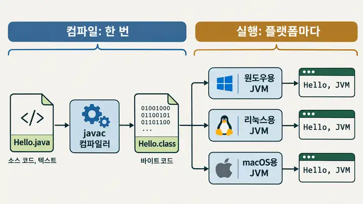
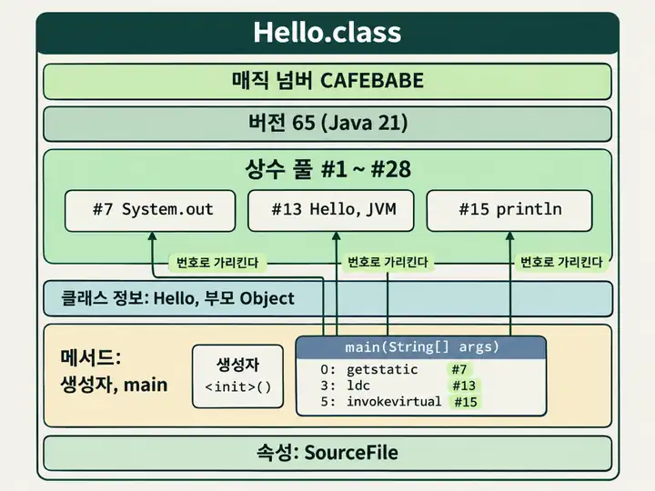
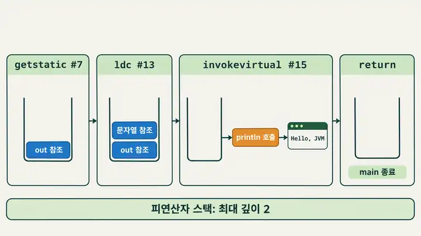
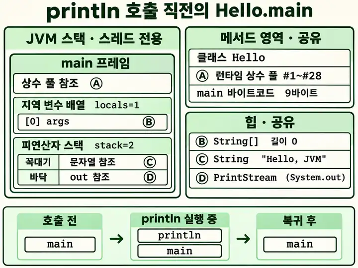

자바 입문 / 01회
Hello World — 소스 코드가 실행되기까지
한 줄을 출력하는 프로그램이 javac를 거쳐 클래스 파일이 되고, JVM이 그 안의 바이트코드에서 main을 찾아 실행하기까지의 전 과정을 따라간다.
오늘 끝나면 할 수 있는 것
- javac와 java 명령이 각각 무엇을 입력받아 무엇을 내놓는지 설명하고, 눈앞의 오류가 컴파일 단계의 것인지 실행 단계의 것인지 구분할 수 있다.
- javap 출력에서 상수 풀과 메서드의 바이트코드를 읽고, println 한 줄이 실행될 때 피연산자 스택이 어떻게 변하는지 추적할 수 있다. JVM·CPU·OS 실행 흐름도 보기 →
- JVM이 클래스를 로딩·링크·초기화한 뒤 main을 호출하는 순서와, main의 선언이 public static void main(String[] args)로 정해진 이유를 말할 수 있다.
- JDK·JRE·JVM의 포함 관계, 그리고 자바 명세와 그 구현(OpenJDK, HotSpot)의 차이를 설명할 수 있다.
- 주석이 클래스 파일에 남지 않는다는 사실과, 유니코드 이스케이프가 주석보다 먼저 처리되어 생기는 함정을 설명할 수 있다.
핵심 강의 → 핵심 요약 → 실무 재판단 → 적용 연습 → 이해 확인
01 핵심 강의
이 강의의 차례 · 소제목 14개
- 한 줄짜리 프로그램에 숨어 있는 질문들
- 두 번의 번역 — 컴파일과 실행은 다른 일이다
- 개발 환경 — JDK, JRE, JVM이 가리키는 것
- javac가 하는 일 — 글자에서 클래스 파일까지
- 클래스 파일을 열어 본다
- 바이트코드 읽기 — println 한 줄의 실제 모습
- java 명령이 하는 일 — JVM 시작부터 main 호출까지
- main의 선언은 왜 그렇게 생겼는가
- JVM은 바이트코드를 어떻게 실행하는가
- 자바란 무엇인가 — 명세와 구현
- 주석 — 컴파일러가 버리는 글자
- 받은 소스 코드를 실행한다는 것 — 소스 루트, 패키지, 클래스패스
- 흔한 오해 바로잡기
- 다음 회차로 이어지는 것
한 줄짜리 프로그램에 숨어 있는 질문들
자바를 처음 배울 때 가장 먼저 만나는 프로그램은 화면에 한 줄을 찍는 것이다. 코드는 다섯 줄이고, 실제로 일을 하는 줄은 하나뿐이다.
public class Hello {
public static void main(String[] args) {
System.out.println("Hello, JVM");
}
}이 파일을 Hello.java라는 이름으로 저장하고 터미널에서 명령 두 개를 차례로 입력하면 결과가 나온다.
javac Hello.java
java HelloHello, JVM여기까지는 따라 하기만 하면 된다. 그런데 이 짧은 과정에는 답하기 쉽지 않은 질문이 여럿 들어 있다. Hello.java는 사람이 읽는 글자로 된 텍스트 파일인데, 글자를 모르는 CPU가 어떻게 이것을 실행하는가. 명령은 왜 하나가 아니라 둘인가. 첫 번째 명령에는 Hello.java라고 파일 이름을 썼는데 두 번째 명령에는 왜 확장자 없이 Hello라고만 쓰는가. public static void main(String[] args)라는 긴 주문은 누가 정했고, 한 글자라도 다르면 어떻게 되는가.
이 회차는 문법을 외우는 대신 이 질문들에 차례로 답한다. 소스 코드가 컴파일러를 거쳐 클래스 파일이 되고, 자바 가상 머신(Java Virtual Machine, JVM)이 그 파일을 읽어 main을 찾아 실행하기까지를 실제 파일의 바이트와 명령어 수준에서 따라간다. 여기서 세운 그림은 이 강좌 전체의 바닥이 된다. 변수가 어디에 놓이는지, 메서드 호출이 무엇인지, 스프링이 클래스를 어떻게 다루는지 같은 뒤의 이야기가 모두 "클래스 파일과 그것을 실행하는 JVM"이라는 같은 무대 위에서 벌어지기 때문이다.
두 번의 번역 — 컴파일과 실행은 다른 일이다
CPU가 실행할 수 있는 것은 자기 종류에 맞는 기계어(machine code)뿐이다. 인텔·AMD 계열 CPU의 기계어와 ARM 계열 CPU의 기계어는 서로 다르고, 같은 CPU라도 운영체제가 다르면 프로그램 파일의 형식과 시스템을 호출하는 방법이 다르다. 그래서 C 같은 언어는 소스 코드를 "특정 CPU와 운영체제의 조합"에 맞는 실행 파일로 번역한다. 윈도우용으로 만든 실행 파일을 리눅스에 그대로 가져가 실행할 수 없는 이유다.
자바는 번역을 두 번으로 나눴다. 첫 번째 번역은 개발자의 컴퓨터에서 한 번 일어난다. 자바 컴파일러 javac가 소스 코드를 읽어 클래스 파일(class file)을 만든다. 클래스 파일에는 실제 CPU의 기계어가 아니라 JVM이라는 가상의 기계를 위한 명령어, 곧 바이트코드(bytecode)가 들어 있다. 두 번째 번역은 프로그램을 실행하는 컴퓨터에서, 실행할 때마다 일어난다. java 명령으로 시작된 JVM이 클래스 파일을 읽고 바이트코드를 그 컴퓨터의 CPU가 할 수 있는 동작으로 옮겨 수행한다.
- 작성사람이 자바 문법에 맞춰 Hello.java(텍스트 파일)를 쓴다.
- 컴파일 — javac문법과 타입을 검사하고, 통과하면 바이트코드가 담긴 Hello.class를 만든다. 오류가 있으면 여기서 멈춘다.
- JVM 시작 — java운영체제가 JVM 프로세스를 띄운다. JVM은 지정된 이름의 클래스를 찾아 메모리에 올린다.
- 실행JVM이 그 클래스의 main 메서드에 든 바이트코드를 한 명령씩 수행한다.
이 구조에서 중요한 점은 중간 산출물인 클래스 파일이 CPU와 운영체제에 묶여 있지 않다는 것이다. 맥에서 만든 Hello.class를 윈도우나 리눅스 서버로 복사해도 그곳에 JVM만 있으면 그대로 실행된다. 플랫폼마다 달라지는 부분은 JVM이 떠맡는다. JVM 자체는 각 운영체제와 CPU에 맞게 따로 만들어진 네이티브 프로그램이다. JVM 명세의 표현을 빌리면, 프로그램을 한 번 작성하면 자바 런타임 환경을 제공하는 어느 기계에서나 실행된다(JVMS §1.1).
두 단계가 나뉘어 있다는 사실은 오류를 읽을 때 바로 쓰인다. 오류에는 컴파일할 때 나는 것과 실행할 때 나는 것이 있고, 둘은 원인도 고치는 방법도 다르다.
| 단계 | 도구 | 입력 | 출력 | 이 단계에서 드러나는 문제 |
|---|---|---|---|---|
| 컴파일 | javac | 소스 파일(.java) | 클래스 파일(.class) | 문법 오류, 타입 불일치, 선언되지 않은 이름 |
| 실행 | java(JVM) | 클래스 이름과 클래스 파일 | 프로그램의 동작 | 클래스를 찾지 못함, main이 없음, 실행 중 예외 |

개발 환경 — JDK, JRE, JVM이 가리키는 것
자바 개발을 시작하려면 JDK를 설치한다. JDK(Java Development Kit)는 이름 그대로 개발 도구 묶음이다. 그 안에는 소스 코드를 컴파일하는 javac, 프로그램을 시작하는 java, 클래스 파일을 풀어서 보여 주는 javap, 클래스 파일을 묶는 jar, API 문서를 만드는 javadoc 같은 명령줄 도구가 들어 있다. 오라클의 JDK 21 도구 문서는 javac를 클래스와 인터페이스 정의를 읽어 바이트코드와 클래스 파일로 컴파일하는 도구로, javap를 클래스 파일을 역어셈블하는 도구로 소개한다.
세 용어는 포함 관계로 이해하면 된다. JVM은 바이트코드를 실행하는 프로그램이다. 그런데 JVM만으로는 Hello를 실행할 수 없다. Hello가 쓰는 System, String, PrintStream 같은 클래스가 있어야 하기 때문이다. 이런 표준 클래스 라이브러리와 JVM을 합쳐 프로그램을 "실행"하는 데 필요한 것만 모은 것을 JRE(Java Runtime Environment)라고 부른다. JDK는 여기에 개발 도구를 더한 것이다.
┌─────────────────────────── JDK ───────────────────────────┐ │ 개발 도구: javac, javap, jar, javadoc, ... │ │ ┌──────────────── 실행 환경(JRE) ─────────────────────┐ │ │ │ 표준 클래스 라이브러리: java.lang.String, │ │ │ │ java.lang.System, ... │ │ │ │ ┌──────────────── JVM ───────────────────────┐ │ │ │ │ │ 클래스 로딩, 바이트코드 실행, 메모리 관리 │ │ │ │ │ └────────────────────────────────────────────┘ │ │ │ └─────────────────────────────────────────────────────┘ │ └────────────────────────────────────────────────────────────┘
예전에는 "실행만 할 사용자는 JRE, 개발자는 JDK"를 따로 내려받았다. 오라클은 JDK 11부터 JRE를 따로 제공하지 않고 JDK만 제공하며, 필요하면 jlink로 작은 맞춤 런타임을 만들도록 안내한다(JDK 11 릴리스 노트). 그래서 지금은 개발용이든 서버용이든 보통 JDK를 설치한다. 다만 개념으로서의 구분은 여전히 쓸모가 있다. "실행에 필요한 것"과 "개발에만 필요한 것"을 나눠 생각하게 해 주기 때문이다.
설치가 끝나면 터미널에서 두 도구가 같은 JDK의 것인지 확인한다. 셸은 PATH 환경 변수에 적힌 디렉터리에서 java와 javac라는 실행 파일을 찾으므로, 여러 버전이 설치된 컴퓨터에서는 생각한 것과 다른 버전이 잡힐 수 있다.
javac -version
java -versionjavac 21.0.13
openjdk version "21.0.13" 2026-10-20 LTS
OpenJDK Runtime Environment Temurin-21.0.13+9 (build 21.0.13+9-LTS)
OpenJDK 64-Bit Server VM Temurin-21.0.13+9 (build 21.0.13+9-LTS, mixed mode, sharing)마지막 줄의 "OpenJDK 64-Bit Server VM"이 이 JDK에 들어 있는 JVM 구현의 이름이다. OpenJDK의 JVM 구현을 HotSpot이라고 부르며, 이 강좌에서 "HotSpot에서는"이라고 범위를 붙이는 설명은 이 구현의 동작을 가리킨다. "mixed mode"라는 표시의 의미는 뒤에서 JVM이 바이트코드를 실행하는 방식을 다룰 때 다시 본다.
IntelliJ IDEA나 이클립스 같은 통합 개발 환경(IDE)은 이 과정을 대신해 주는 도구다. 편집기에서 코드를 쓰고 실행 버튼을 누르면 IDE가 소스를 컴파일해 클래스 파일을 만들고 JVM을 띄워 그 클래스를 실행한다. 버튼 하나로 끝나기 때문에 두 단계가 있다는 사실이 가려질 뿐, 일어나는 일은 터미널에서 javac와 java를 차례로 입력한 것과 같다. IDE가 내는 오류 메시지가 이해되지 않을 때 터미널에서 두 명령을 직접 실행해 보면 문제가 어느 단계에 있는지 금방 드러난다.
javac가 하는 일 — 글자에서 클래스 파일까지
javac의 설명서는 이 도구가 하는 일을 한 문장으로 적는다. 자바 언어로 쓰인 소스 파일을 읽어 JVM에서 실행되는 클래스 파일로 컴파일한다는 것이다. 그 사이에 일어나는 일은 자바 언어 명세(Java Language Specification, JLS)가 정한 규칙을 차례로 적용하는 과정이다.
먼저 컴파일러는 파일의 글자들을 의미 있는 조각으로 자른다. JLS §3.2는 이 어휘 변환을 세 단계로 규정한다. 첫째, \u0041처럼 쓴 유니코드 이스케이프를 해당 문자로 바꾼다. 둘째, 그 결과를 입력 문자와 줄 끝 문자의 흐름으로 나눈다. 셋째, 공백과 주석을 버리고 남은 것을 토큰(token)으로 만든다. public, class, Hello, {, "Hello, JVM" 같은 것이 토큰이다. 들여쓰기와 줄바꿈이 프로그램의 의미에 영향을 주지 않는 이유가 여기에 있다. 토큰을 구분하는 데 쓰인 뒤 버려지기 때문이다.
다음으로 토큰의 나열이 문법에 맞는지 본다. 클래스 선언 안에 메서드 선언이 있고, 메서드 본문 안에 문장이 있으며, 문장은 세미콜론으로 끝나야 한다는 식의 규칙이다. 어긋나면 컴파일러는 파일 이름, 줄 번호, 문제의 위치를 알려 주고 멈춘다. 세미콜론을 빼먹은 경우의 실제 메시지는 다음과 같다.
Bad.java:3: error: ';' expected
System.out.println("x")
^
1 error문법에 맞더라도 의미가 맞지 않으면 역시 컴파일되지 않는다. 자바는 정적 타입 언어(statically typed language)여서 모든 변수와 식의 타입이 컴파일 시점에 정해진다(JLS 4장 첫머리). 정수를 담겠다고 선언한 변수에 문자열을 넣으려 하면 프로그램을 실행해 보기도 전에 컴파일러가 막는다.
Bad2.java:3: error: incompatible types: String cannot be converted to int
int n = "hello";
^
1 error이름을 확인하는 일도 이 단계에 속한다. System.out.println이라고 썼을 때 컴파일러는 System이라는 클래스가 있는지, 그 안에 out이라는 필드가 있는지, 그 필드의 타입에 문자열 하나를 받는 println 메서드가 있는지를 JDK의 클래스 라이브러리에서 찾아 확인한다. 철자를 틀려 System.out.printn이라고 쓰면 그런 메서드를 찾을 수 없다는 오류가 난다. 컴파일을 통과했다는 것은 "이 프로그램이 문법에 맞고, 쓰인 이름이 모두 존재하며, 타입이 서로 맞는다"는 것까지를 보장한다. 프로그램이 의도대로 동작한다는 보장은 아니다.
모든 검사를 통과하면 컴파일러는 클래스마다 클래스 파일 하나를 만든다. 소스 파일 하나에 클래스 둘을 선언하면 클래스 파일도 둘이 나온다. -d 옵션으로 출력 디렉터리를 지정하지 않으면 클래스 파일은 소스 파일과 같은 디렉터리에 놓인다. 오류가 하나라도 있으면 Hello.class는 만들어지지 않는다. 그래서 컴파일 오류가 난 채로 java Hello를 실행하면 "클래스를 찾을 수 없다"는 전혀 다른 모양의 오류를 보게 된다.
파일 이름에 관한 규칙도 컴파일러가 확인한다. public으로 선언한 클래스는 그 이름과 같은 이름의 파일에 있어야 한다. Right라는 public 클래스를 Wrong.java에 넣고 컴파일하면 이렇게 된다.
Wrong.java:1: error: class Right is public, should be declared in a file named Right.java
public class Right {
^
1 errorJLS §7.6은 패키지를 파일 시스템에 저장하는 환경이 이런 제한을 둘 수 있다고 적고, 그 이유를 컴파일러가 패키지 안에서 이름으로 클래스를 찾기 쉬워지기 때문이라고 설명한다. 다른 파일에서 Right를 쓰면 컴파일러는 Right.java를 찾으면 된다. 이 제한에서 "소스 파일 하나에 public 클래스는 많아야 하나"라는 관례가 따라 나온다.
클래스 파일을 열어 본다
컴파일 결과물인 Hello.class는 텍스트가 아니라 이진 파일이다. 편집기로 열면 깨진 글자가 보인다. 바이트를 16진수로 보여 주는 도구로 앞부분을 보면 다음과 같다(javac 21로 컴파일한 결과이며 파일 전체는 414바이트다).
00000000: cafe babe 0000 0041 001d 0a00 0200 0307 .......A........
00000010: 0004 0c00 0500 0601 0010 6a61 7661 2f6c ..........java/l
00000020: 616e 672f 4f62 6a65 6374 0100 063c 696e ang/Object...<in
00000030: 6974 3e01 0003 2829 5609 0008 0009 0700 it>...()V.......
00000040: 0a0c 000b 000c 0100 106a 6176 612f 6c61 .........java/la
00000050: 6e67 2f53 7973 7465 6d01 0003 6f75 7401 ng/System...out.이 바이트들의 배치는 JVM 명세(Java Virtual Machine Specification, JVMS) 4장이 정한다. 클래스 파일은 8비트 바이트의 흐름이고, 여러 바이트로 된 값은 높은 자리 바이트가 먼저 오는 빅 엔디언(big-endian) 순서로 저장되며, 항목 사이에 빈칸이나 정렬용 여백이 없다(JVMS §4.1). 맨 앞의 구조는 다음과 같다.
ClassFile {
u4 magic; // 4바이트
u2 minor_version; // 2바이트
u2 major_version; // 2바이트
u2 constant_pool_count; // 2바이트
cp_info constant_pool[constant_pool_count-1];
u2 access_flags;
u2 this_class;
u2 super_class;
// ... 인터페이스, 필드, 메서드, 속성이 이어진다
}이 구조를 위의 16진수에 겹쳐 읽어 보자. 처음 4바이트 cafe babe는 매직 넘버다. 모든 클래스 파일은 0xCAFEBABE로 시작하고, JVM은 이 값으로 "이 파일이 클래스 파일인가"를 먼저 확인한다. 다음 2바이트 0000은 부 버전, 그다음 2바이트 0041은 주 버전이다. 16진수 41은 10진수 65이고, 65는 Java SE 21을 뜻한다. 이어지는 001d는 상수 풀 항목 수에 1을 더한 값으로, 10진수 29다. 따라서 이 파일의 상수 풀에는 1번부터 28번까지 항목이 있다.
상수 풀(constant pool)은 클래스 파일의 핵심이다. 이 클래스가 쓰는 이름과 상수가 모두 여기에 표로 정리되어 있고, 바이트코드는 이 표의 번호만 가리킨다. 16진수 덤프의 오른쪽 열에 java/lang/Object, java/lang/System, out 같은 글자가 보이는 것이 그 항목들이다. 바이트를 손으로 읽는 것은 여기까지만 하고, 나머지는 JDK에 들어 있는 javap에게 맡기자. -v 옵션을 주면 클래스 파일의 내용을 사람이 읽을 수 있게 풀어 준다.
javap -v Hellopublic class Hello
minor version: 0
major version: 65
flags: (0x0021) ACC_PUBLIC, ACC_SUPER
this_class: #21 // Hello
super_class: #2 // java/lang/Object
interfaces: 0, fields: 0, methods: 2, attributes: 1
Constant pool:
#1 = Methodref #2.#3 // java/lang/Object."<init>":()V
#2 = Class #4 // java/lang/Object
...
#7 = Fieldref #8.#9 // java/lang/System.out:Ljava/io/PrintStream;
#8 = Class #10 // java/lang/System
#9 = NameAndType #11:#12 // out:Ljava/io/PrintStream;
#10 = Utf8 java/lang/System
#11 = Utf8 out
#12 = Utf8 Ljava/io/PrintStream;
#13 = String #14 // Hello, JVM
#14 = Utf8 Hello, JVM
#15 = Methodref #16.#17 // java/io/PrintStream.println:(Ljava/lang/String;)V
...
#21 = Class #22 // Hello
#22 = Utf8 Hello소스에서 한 줄이었던 System.out.println("Hello, JVM")이 상수 풀에서는 세 덩어리로 나뉘어 있다. 7번은 "java/lang/System 클래스의 out이라는 필드, 타입은 java/io/PrintStream"이라는 필드 참조다. 13번은 문자열 상수 Hello, JVM이다. 15번은 "java/io/PrintStream 클래스의 println이라는 메서드, 문자열 하나를 받고 아무것도 돌려주지 않음"이라는 메서드 참조다. 각 항목은 다시 다른 항목의 번호를 가리키고, 그 끝에는 Utf8이라는 글자 그대로의 이름이 있다.
여기서 눈여겨볼 것은 클래스 파일에 메모리 주소가 하나도 없다는 점이다. System 클래스가 메모리의 어디에 있는지, println의 코드가 어디에 있는지는 적혀 있지 않고 오직 이름만 있다. 이런 참조를 기호 참조(symbolic reference)라고 한다. JVMS §4.4의 설명대로 JVM 명령어는 클래스나 객체의 실행 시점 배치에 의존하지 않고 상수 풀의 기호 정보만 가리킨다. 이름을 실제 대상에 연결하는 일은 프로그램이 실행될 때 JVM이 한다. Hello.class가 414바이트밖에 되지 않는 것도 이 때문이다. println이 실제로 글자를 내보내는 코드는 이 파일에 없고, JDK에 들어 있는 PrintStream 클래스에 있다.
(Ljava/lang/String;)V처럼 생긴 문자열은 디스크립터(descriptor)라고 하며, 타입을 클래스 파일 안에서 표기하는 방식이다. 괄호 안이 매개변수 타입, 괄호 뒤가 반환 타입이다. L과 ; 사이에는 클래스 이름이 오고, [는 배열, V는 void, I는 int를 뜻한다. 그러니 main의 디스크립터 ([Ljava/lang/String;)V는 "String 배열 하나를 받고 값을 돌려주지 않는다"로 읽는다. 패키지 구분자가 점이 아니라 빗금인 것도 클래스 파일 안에서의 표기 방식이다.

바이트코드 읽기 — println 한 줄의 실제 모습
이제 메서드 안을 본다. javap -c는 각 메서드의 바이트코드를 명령어 이름으로 풀어서 보여 준다.
javap -c HelloCompiled from "Hello.java"
public class Hello {
public Hello();
Code:
0: aload_0
1: invokespecial #1 // Method java/lang/Object."<init>":()V
4: return
public static void main(java.lang.String[]);
Code:
0: getstatic #7 // Field java/lang/System.out:Ljava/io/PrintStream;
3: ldc #13 // String Hello, JVM
5: invokevirtual #15 // Method java/io/PrintStream.println:(Ljava/lang/String;)V
8: return
}main 메서드는 명령어 네 개로 이루어져 있다. 각 줄의 맨 앞 숫자는 메서드 코드 안에서의 바이트 위치이고, 그 뒤가 명령어 이름, 그다음이 피연산자다. #7, #13, #15는 앞에서 본 상수 풀의 번호이며, // 뒤는 javap이 그 번호가 가리키는 내용을 친절하게 풀어 적어 준 것이다. 위치가 0, 3, 5, 8로 불규칙하게 늘어나는 것은 명령어마다 길이가 다르기 때문이다. JVM 명령어는 1바이트짜리 연산 코드(opcode) 뒤에 0개 이상의 피연산자가 붙는 형태다(JVMS §2.11). getstatic은 연산 코드 1바이트와 상수 풀 번호 2바이트로 3바이트, ldc는 연산 코드와 번호 1바이트로 2바이트, invokevirtual은 3바이트, return은 1바이트다. 연산 코드가 정확히 한 바이트이므로 JVM의 명령어 종류는 256가지를 넘을 수 없다. 이렇게 촘촘하게 부호화된 덕분에 main 본문 전체가 9바이트다.
이 명령어들을 이해하려면 JVM이 스택 기반 기계라는 점을 알아야 한다. 실제 CPU는 레지스터라는 이름 붙은 저장 칸에 값을 두고 계산하지만, JVM의 명령어는 피연산자 스택(operand stack)이라는 임시 작업대를 쓴다. 값을 쓰기 전에 스택에 쌓고(push), 연산은 스택 맨 위의 값을 꺼내(pop) 쓰고 결과를 다시 쌓는다. 메서드가 호출될 때마다 그 메서드 전용의 피연산자 스택이 하나 생긴다(JVMS §2.6.2). 네 명령을 차례로 따라가 보자.
| 위치 | 명령어 | 하는 일 | 실행 후 피연산자 스택(오른쪽이 맨 위) |
|---|---|---|---|
| — | (시작) | main이 호출된 직후 | 비어 있음 |
| 0 | getstatic #7 | System 클래스의 정적 필드 out의 값(PrintStream 객체의 참조)을 읽어 쌓는다 | out 참조 |
| 3 | ldc #13 | 상수 풀 13번의 문자열 "Hello, JVM"을 가리키는 참조를 쌓는다 | out 참조, 문자열 참조 |
| 5 | invokevirtual #15 | 스택에서 인자(문자열 참조)와 호출 대상(out 참조)을 꺼내 println을 호출한다. 반환값이 없으므로 아무것도 쌓지 않는다 | 비어 있음 |
| 8 | return | main을 끝낸다 | — |
소스 코드의 System.out.println("Hello, JVM")을 다시 보면 이 순서가 그대로 보인다. System.out으로 객체를 구하고, 괄호 안의 인자를 준비하고, 메서드를 호출한다. 자바 소스의 한 줄은 이렇게 "값을 쌓는 명령"과 "쌓인 값을 소비하는 명령"의 나열로 번역된다. 덧붙여 System.out.println은 자바의 특별한 문법이나 키워드가 아니다. java.lang.System이라는 클래스에 out이라는 정적 필드가 있고, 그 필드가 가리키는 PrintStream 객체에 println이라는 메서드가 있을 뿐이다. API 문서는 System.out을 "표준" 출력 스트림이라고 설명하며, 보통 화면 출력이나 실행 환경이 지정한 출력 대상에 연결된다고 적는다.
javap -v의 출력에는 메서드마다 다음 한 줄이 더 나온다.
Code:
stack=2, locals=1, args_size=1
...
LineNumberTable:
line 3: 0
line 4: 8stack=2는 이 메서드를 실행하는 동안 피연산자 스택에 동시에 쌓이는 값이 최대 2개라는 뜻이다. 위 표에서 가장 많이 쌓였을 때가 "out 참조, 문자열 참조"의 2개였다. locals=1은 이 메서드의 지역 변수 칸이 1개라는 뜻이고, 그 한 칸은 매개변수 args가 차지한다. 이 값들은 컴파일러가 미리 계산해 클래스 파일에 적어 둔다. JVM은 메서드를 호출할 때 이 숫자만 보고 필요한 크기의 작업 공간을 한 번에 마련한다. 다음 회차에서 변수를 선언하면 이 locals 값이 늘어나는 것을 보게 된다.
LineNumberTable은 바이트코드 위치와 소스의 줄 번호를 이어 주는 표다. "소스 3번 줄은 코드 위치 0에서 시작하고, 4번 줄은 위치 8에서 시작한다"는 뜻이다. 프로그램이 실행 중에 오류로 멈추면 "어느 파일 몇 번 줄"인지가 출력되는데, 그 정보의 출처가 이 표다. JVMS §4.7.12는 이 표를 디버거 등이 쓰는 선택적 속성으로 규정하고, javac는 기본 설정에서 줄 번호와 소스 파일 이름 정보를 클래스 파일에 넣는다.
출력 위쪽의 public Hello()도 짚어 두자. 소스에 쓴 적이 없는 메서드다. 클래스에 생성자를 하나도 쓰지 않으면 컴파일러가 아무 일도 하지 않는 기본 생성자를 넣어 준다. 그 안의 세 명령은 부모 클래스 Object의 생성자를 호출하고 끝낸다. 이 프로그램에서는 Hello 객체를 만든 적이 없으므로 이 생성자는 한 번도 실행되지 않는다. 생성자와 객체는 다음 권(자바 기본편)의 주제이고, 지금은 "소스에 없는 것이 클래스 파일에는 있을 수 있다"는 것만 확인하면 된다.

java 명령이 하는 일 — JVM 시작부터 main 호출까지
이제 두 번째 명령 java Hello를 본다. java 명령의 설명서는 이 명령이 JVM을 시작하고, 지정한 클래스를 로딩하고, 그 클래스의 main() 메서드를 호출하는 방식으로 자바 애플리케이션을 시작한다고 적는다. 이 한 문장 안에 여러 단계가 들어 있으며, JLS §12.1과 JVMS §5.2가 그 순서를 규정한다.
- JVM 프로세스 시작운영체제가 java 실행 파일을 프로세스로 띄운다. JVM이 자기 메모리 영역을 준비한다.
- 로딩(loading)클래스 로더가 Hello라는 이름의 이진 표현(Hello.class)을 클래스패스에서 찾아 읽고, JVM 안에 클래스로 만든다. 찾지 못하면 오류가 난다.
- 링크(linking)검증: 클래스 파일이 형식에 맞는지 확인한다. 준비: 정적 변수의 저장 공간을 마련한다. 해석: 기호 참조를 실제 대상에 연결한다(이 시점에 다 하지 않아도 된다).
- 초기화(initialization)부모 클래스(Object)를 먼저 초기화한 뒤, Hello의 정적 변수 초기화식과 static 블록을 소스에 적힌 순서대로 실행한다.
- main 호출Hello의 main 메서드를 호출하면서 명령줄 인자를 문자열 배열로 넘긴다.
첫 번째로 확인할 것은 java 뒤에 쓰는 것이 파일 이름이 아니라 클래스 이름이라는 점이다. JVM은 Hello라는 이름의 클래스를 요청받고, 클래스 로더가 그 이름으로부터 찾아야 할 파일을 정한다. 그래서 확장자를 붙이면 "Hello.class라는 이름의 클래스"를 찾으려다 실패한다.
java Hello.classError: Could not find or load main class Hello.class
Caused by: java.lang.ClassNotFoundException: Hello.class두 번째는 클래스를 "어디서" 찾느냐다. 사용자가 만든 클래스를 찾는 위치 목록을 클래스패스(class path)라고 한다. java 명령의 설명서에 따르면 클래스패스 옵션도 쓰지 않고 CLASSPATH 환경 변수도 설정하지 않았을 때 클래스패스는 현재 디렉터리다. 지금까지 java Hello가 동작한 것은 Hello.class가 있는 디렉터리에서 명령을 실행했기 때문이다. 다른 디렉터리로 옮겨 가서 같은 명령을 입력하면 클래스를 찾지 못한다. 이때는 -cp(또는 --class-path) 옵션으로 클래스 파일이 있는 곳을 알려 준다.
cd /
java Hello # 실패: 현재 디렉터리에 Hello.class가 없다
java -cp /home/me/work Hello # 성공: 찾을 위치를 직접 지정Error: Could not find or load main class Hello
Caused by: java.lang.ClassNotFoundException: Hello세 번째로, Hello보다 먼저 로딩되는 클래스가 있다. Hello의 부모는 Object이고 main의 매개변수 타입은 String이며 본문은 System과 PrintStream을 쓴다. JLS §12.1.3은 클래스를 초기화하기 전에 그 직접 부모 클래스가 먼저 초기화되어야 한다고 규정한다. -verbose:class 옵션을 주면 로딩되는 클래스가 한 줄씩 출력되는데, HotSpot(OpenJDK 21)에서 Hello를 실행해 보면 첫 줄은 java.lang.Object이고 Hello는 JDK의 클래스 수백 개가 지나간 뒤에야 나온다. 한 줄을 출력하는 프로그램도 JVM 입장에서는 수백 개의 클래스가 협력하는 프로그램이다.
네 번째로, main이 "가장 먼저 실행되는 코드"라는 말은 엄밀하게는 틀리다. 초기화 단계가 main 호출보다 앞에 있기 때문이다. 다음 프로그램으로 확인할 수 있다.
public class Init {
static {
System.out.println("static 초기화 블록");
}
public static void main(String[] args) {
System.out.println("main 시작");
}
}static 초기화 블록
main 시작static { ... }은 클래스가 초기화될 때 한 번 실행되는 블록이다. JVM이 Init을 로딩하고 링크한 뒤 초기화하면서 이 블록을 실행하고, 그다음에야 main을 호출한다. static의 의미와 클래스 초기화 시점은 자바 기본편에서 자세히 다룬다. 여기서는 "main 호출은 JVM 시작 절차의 마지막 단계"라는 순서만 기억해 두자.
main의 선언은 왜 그렇게 생겼는가
public static void main(String[] args)는 관습이 아니라 명세다. JLS §12.1.4는 main 메서드가 public, static, void로 선언되어야 하고 선언 타입이 String 배열인 매개변수를 가져야 한다고 규정한다. JVM은 이 모양의 메서드를 찾아 호출하도록 약속되어 있다. 각 단어가 그 자리에 있는 이유를 하나씩 보자.
- static — JVM이
main을 호출하는 시점에는Hello객체가 하나도 없다. static 메서드는 객체 없이 클래스만으로 호출할 수 있는 메서드다. 시작점이 static이기 때문에 JVM은 "어떤 객체를, 어떤 생성자로 만들어야 하는가"를 고민하지 않고 프로그램을 시작할 수 있다. - public — 클래스 바깥에서 호출할 수 있다는 표시다.
main은 프로그램 바깥(JVM을 띄운 실행기)에서 호출하는 진입점이다. - void —
main은 값을 돌려주지 않는다. 운영체제에 알릴 종료 코드는 반환값이 아니라System.exit(3)처럼 별도의 메서드로 정한다. 아무 문제 없이main이 끝난 프로그램의 종료 코드는 0이다. - main — 이름이 정확히
main이어야 한다. 자바는 대소문자를 구분하므로Main은 다른 이름이다. - String[] args — 명령줄에서 클래스 이름 뒤에 쓴 단어들이 문자열 배열로 전달된다. 매개변수 이름
args는 바꿔도 되고, 명세는String... args라는 표기도 허용한다.
명령줄 인자가 전달되는 모습은 다음 프로그램으로 볼 수 있다.
public class Args {
public static void main(String[] args) {
System.out.println("인자 개수: " + args.length);
for (String arg : args) {
System.out.println(arg);
}
}
}java Args one "two three"인자 개수: 2
one
two three셸이 명령줄을 공백으로 나누고(따옴표로 묶은 부분은 하나로 취급한다) JVM이 그 조각들을 String 배열에 담아 main에 넘긴다. 인자를 하나도 주지 않으면 길이가 0인 배열이 전달된다. 앞에서 본 locals=1의 그 한 칸이 바로 이 배열의 참조가 놓이는 자리다.
선언을 조금 틀리면 어떻게 될까. 매개변수를 배열이 아닌 String args로 쓴 프로그램을 만들어 보자.
public class WrongMain {
public static void main(String args) { // 배열이 아니다
System.out.println("x");
}
}Error: Main method not found in class WrongMain, please define the main method as:
public static void main(String[] args)
or a JavaFX application class must extend javafx.application.Application이 결과에는 중요한 구분이 들어 있다. 컴파일은 문제없이 된다. 컴파일러 입장에서 이것은 main이라는 이름의, 문자열 하나를 받는 평범한 메서드일 뿐이고 문법적으로 틀린 곳이 없다. 실패하는 것은 실행 단계다. JVM을 띄우는 실행기가 약속된 모양의 메서드를 찾지 못해서다. "컴파일이 된다"와 "실행할 수 있다"는 서로 다른 조건이라는 것을 보여 주는 가장 간단한 예다.
JVM은 바이트코드를 어떻게 실행하는가
JVM 명세는 JVM을 추상적인 계산 기계라고 정의한다. 실제 기계처럼 명령어 집합이 있고 실행 중에 여러 메모리 영역을 다룬다는 것이다(JVMS §1.2). 같은 절에 이 강좌에서 여러 번 되새길 문장이 있다. JVM은 자바 프로그래밍 언어에 대해서는 아무것도 모르고, 오직 클래스 파일이라는 특정한 이진 형식만 안다는 것이다. JVM에게 Hello.java는 존재하지 않는다. JVM이 보는 것은 앞에서 살펴본 상수 풀과 네 개의 명령어뿐이다.
명령어를 실행하는 가장 단순한 방법은 하나씩 읽어서 그때그때 수행하는 것이다. JVMS §2.11은 인터프리터의 안쪽 반복문을 다음과 같이 요약한다.
do {
atomically calculate pc and fetch opcode at pc;
if (operands) fetch operands;
execute the action for the opcode;
} while (there is more to do);pc는 프로그램 카운터(program counter)로, 지금 실행 중인 명령어의 위치를 담는다. 위치 0에서 연산 코드를 읽어 보니 getstatic이고, 피연산자 2바이트를 더 읽어 7번임을 알고, 해당 동작을 수행한 뒤 pc를 3으로 옮긴다. 이 과정을 return을 만날 때까지 되풀이한다. 이렇게 명령어를 해석하며 실행하는 부분을 인터프리터(interpreter)라고 한다.
하지만 매번 해석하는 방식은 같은 코드를 수없이 되풀이하는 프로그램에서 느리다. 그래서 HotSpot은 실행 도중에 바이트코드를 그 컴퓨터의 기계어로 번역해 두고 다음부터는 번역된 기계어를 직접 실행하는 JIT(just-in-time) 컴파일러를 함께 쓴다. 앞에서 본 java -version 출력의 "mixed mode"가 이 방식을 가리킨다. java 명령의 설명서는 기본으로 켜져 있는 -Xmixed 옵션을 "자주 실행되는(hot) 메서드는 기계어로 컴파일하고, 나머지 바이트코드는 인터프리터로 실행한다"고 설명한다. 이를 끄는 옵션도 있다. -Xint를 주면 기계어로의 컴파일이 꺼지고 모든 바이트코드가 인터프리터로만 실행되며, JIT 컴파일러가 주는 성능 이점이 사라진다고 적혀 있다. 이 옵션으로 java -Xint -version을 실행하면 같은 자리의 표시가 "interpreted mode"로 바뀐다. Hello처럼 금방 끝나는 프로그램은 어느 쪽으로 실행해도 출력이 같고 체감 차이도 없다.
System.out.println("Hello, JVM") 한 줄이 터미널에 보이기까지- OS가 실행 차례를 준다운영체제의 스케줄러가 JVM의 main 스레드를 CPU 코어에서 실행하도록 선택한다.
- CPU가 코드를 실행한다CPU는 인터프리터의 기계어를 실행해 바이트코드의 동작을 수행한다. JIT가 이미 컴파일한 부분에 들어가면 CPU는 그 기계어를 실행한다.
- 표준 출력에 쓰기를 요청한다println은 문자열과 줄바꿈을 표준 출력으로 보낸다. 출력할 바이트를 운영체제에 넘길 때는 시스템 호출을 사용한다.
- 터미널에 글자가 나타난다표준 출력이 터미널에 연결돼 있으면 운영체제를 통해 바이트가 전달되고, 터미널이 “Hello, JVM”을 표시한다.
CPU는 JVM의 코드도, 운영체제의 코드도 실행한다. 위 흐름에서 계산을 할 때는 CPU가 JVM 쪽 명령을 계속 실행할 수 있다. 출력처럼 운영체제의 도움이 필요해 시스템 호출을 하면, 같은 CPU가 커널 모드로 전환해 운영체제 쪽 명령을 실행한다.
여기서 명세와 구현을 구분해야 한다. JVMS는 각 명령어가 "무엇을 해야 하는지"만 정하고 "어떻게 실행할지"는 정하지 않는다. JVMS 2장 첫머리는 실행 시점 데이터 영역의 메모리 배치, 가비지 컬렉션 알고리즘, 명령어를 기계어로 번역하는 것 같은 내부 최적화를 구현자의 재량이라고 밝힌다. 인터프리터로 실행하든 기계어로 번역해 실행하든 결과가 같아야 한다는 것만이 약속이다. 그러니 "자바는 인터프리터 언어인가 컴파일 언어인가"라는 질문에는 한 단어로 답할 수 없다. 소스는 javac가 바이트코드로 컴파일하고, 바이트코드는 JVM이 해석하거나 다시 기계어로 컴파일해 실행한다.
Hello가 실행되는 순간의 JVM 내부를 그려 보면 다음과 같다. JVMS §2.5는 JVM이 쓰는 메모리를 몇 개의 영역으로 나눈다. 메서드 영역(method area)에는 로딩된 클래스의 정보, 곧 상수 풀과 메서드의 바이트코드가 놓인다. 힙(heap)에는 객체가 놓인다. 그리고 스레드마다 JVM 스택이 하나씩 있어서, 메서드가 호출될 때마다 그 메서드의 작업 공간인 프레임(frame)이 쌓이고 메서드가 끝나면 사라진다.

args(B)는 길이 0인 배열을 가리킨다. 아래 세 장면은 같은 스레드에서 println이 호출되고 main으로 돌아오는 과정이다.프레임 하나는 자신만의 지역 변수 배열과 피연산자 스택, 그리고 현재 메서드가 속한 클래스의 상수 풀에 대한 참조를 가진다(JVMS §2.6). javap -v가 보여 준 locals=1은 지역 변수 슬롯이 한 칸이라는 뜻이고, stack=2는 피연산자 스택이 가장 깊을 때 두 칸을 쓴다는 뜻이다. 그림은 바로 그 순간이다. getstatic이 먼저 올린 출력 스트림 참조(D) 위에 ldc가 올린 문자열 참조(C)가 놓여 있다. 다음 명령인 invokevirtual은 D가 가리키는 객체의 println을 호출하면서 C를 인자로 넘긴다. 이 그림은 앞으로 회차가 진행될수록 채워진다. 2회에서는 지역 변수 배열에, 8회에서는 힙의 배열에, 9회에서는 프레임이 여러 개 쌓이는 모습에 초점을 맞춘다.
자바란 무엇인가 — 명세와 구현
"자바"라는 말은 사실 여러 가지를 한꺼번에 가리킨다. 첫째는 언어다. 어떤 글자의 나열이 올바른 프로그램이고 그 의미가 무엇인지는 JLS가 정한다. 둘째는 가상 머신이다. 클래스 파일의 형식과 명령어의 의미는 JVMS가 정한다. 셋째는 표준 라이브러리다. String이나 System 같은 클래스가 어떤 메서드를 갖고 어떻게 동작해야 하는지는 Java SE API 명세(Javadoc)가 정한다. 이 셋을 합친 것이 Java SE 플랫폼이고, 버전 번호 21은 이 표준의 판 번호다.
표준은 문서이고, 문서만으로는 프로그램을 실행할 수 없다. 표준을 실제로 구현한 소프트웨어가 JDK다. OpenJDK 프로젝트의 JDK 21 페이지는 이 릴리스를 Java Community Process의 JSR 396으로 명세된 Java SE 플랫폼 버전 21의 참조 구현(reference implementation)이라고 소개한다. 오라클을 비롯한 여러 회사와 단체가 이 OpenJDK 소스를 바탕으로 각자의 JDK 배포판을 만들어 내놓는다. 앞에서 본 java -version 출력의 "Temurin"이 그런 배포판 이름 가운데 하나다. 어느 배포판을 쓰든 표준을 지키는 한 같은 Hello.class는 같은 결과를 낸다.
이 구분이 실용적으로 중요한 이유는 "어디까지 믿어도 되는가"의 경계를 알려 주기 때문이다. JLS와 JVMS가 보장하는 동작은 어떤 JDK에서도 성립한다. 반면 JIT 컴파일러가 언제 어떤 코드를 기계어로 바꾸는지, 객체가 메모리에서 몇 바이트를 차지하는지 같은 것은 HotSpot이라는 구현의 선택이고 버전에 따라 달라질 수 있다. 이 강좌에서 구현에 속하는 이야기에는 "HotSpot에서는"이라는 범위를 붙인다.
버전에 대해서도 클래스 파일이 알려 주는 것이 있다. 앞에서 본 주 버전 65가 그것이다. JVMS §4.1의 표에서 주요 버전만 추리면 다음과 같다. 이 표의 출시 시기를 보면 Java 9(2017년 9월)부터는 3월과 9월, 여섯 달 간격으로 새 버전이 나오고 있다. OpenJDK의 JDK 21 페이지는 JDK 21이 2023년 9월 19일에 정식 출시되었고 대부분의 벤더에서 장기 지원(LTS) 릴리스가 될 것이라고 적고 있다.
| Java SE | 출시 | 클래스 파일 주 버전 | 이 버전의 JVM이 지원해야 하는 주 버전 |
|---|---|---|---|
| 8 | 2014년 3월 | 52 | 45 ~ 52 |
| 11 | 2018년 9월 | 55 | 45 ~ 55 |
| 17 | 2021년 9월 | 61 | 45 ~ 61 |
| 21 | 2023년 9월 | 65 | 45 ~ 65 |
마지막 열이 호환성의 방향을 말해 준다. Java 21의 JVM은 옛 버전으로 컴파일한 클래스 파일을 모두 실행할 수 있어야 한다. 반대 방향은 성립하지 않는다. JVM은 자기가 아는 것보다 높은 버전의 클래스 파일을 만나면 실행을 거부한다. 실험 삼아 Hello.class의 여덟 번째 바이트(주 버전의 아랫자리)를 0x41에서 0x42, 곧 66으로 고쳐 JDK 21로 실행하면 이런 오류가 난다.
Error: LinkageError occurred while loading main class Hello
java.lang.UnsupportedClassVersionError: Hello has been compiled by a more recent version of the Java Runtime (class file version 66.0), this version of the Java Runtime only recognizes class file versions up to 65.0실무에서 이 오류는 "개발자 컴퓨터의 JDK는 새 버전인데 서버의 자바는 옛 버전"일 때 나타난다. 메시지에 나오는 숫자를 위 표와 맞춰 보면 누가 어떤 버전으로 컴파일했고 실행한 JVM이 어떤 버전인지 바로 알 수 있다. 새 JDK로 옛 JVM에서 돌아갈 클래스 파일을 만들어야 한다면 javac --release 17 Hello.java처럼 --release 옵션을 쓴다. 이렇게 컴파일한 클래스 파일을 javap -v로 보면 주 버전이 61로 찍힌다.
JVM이 클래스 파일만 안다는 사실에서 한 가지가 더 따라 나온다. 올바른 클래스 파일을 만들어 내기만 하면 그 원천이 자바 소스일 필요가 없다. JVMS §1.2는 유효한 클래스 파일로 표현할 수 있는 기능을 가진 언어라면 어떤 언어든 JVM 위에 올릴 수 있다고 적는다. 코틀린 같은 언어가 자바 라이브러리를 그대로 쓰고 스프링 위에서 동작하는 것은, 그 언어의 컴파일러도 결국 같은 형식의 클래스 파일을 만들기 때문이다.
주석 — 컴파일러가 버리는 글자
주석(comment)은 사람을 위해 소스 코드에 적어 두는 설명이다. JLS §3.7은 주석을 두 종류로 규정한다. /*에서 */까지의 모든 글자를 무시하는 전통적 주석(traditional comment)과, //부터 그 줄 끝까지를 무시하는 줄 끝 주석(end-of-line comment)이다.
/*
* 여러 줄에 걸쳐 쓸 수 있는 전통적 주석.
*/
public class Hello {
/** 문서 주석: 별표 두 개로 시작한다. javadoc 도구가 읽는다. */
public static void main(String[] args) {
System.out.println("Hello, JVM"); // 줄 끝 주석
// System.out.println("이 줄은 실행되지 않는다");
}
}/**로 시작하는 문서 주석(documentation comment)은 문법상으로는 전통적 주석의 한 형태다. 컴파일러는 다른 주석과 똑같이 무시한다. 다른 점은 JDK의 javadoc 도구가 이 주석을 읽어 HTML로 된 API 문서를 만든다는 것이다. 우리가 참고하는 String이나 System의 API 문서가 바로 JDK 소스의 문서 주석에서 만들어진 것이다.
앞에서 본 어휘 변환의 세 번째 단계가 주석의 운명을 정한다. 주석은 공백과 함께 버려지고 토큰이 되지 못한다. 따라서 문법 검사에도, 타입 검사에도, 클래스 파일에도 주석은 나타나지 않는다. 직접 확인할 수 있다. 주석이 없는 Hello.java와, 같은 줄 위치에 주석만 덧붙인 Hello.java를 각각 컴파일해 두 클래스 파일을 바이트 단위로 비교하면 완전히 같다.
public class Hello { // 클래스 선언
public static void main(String[] args) { /* 진입점 */
System.out.println("Hello, JVM"); // 출력
} /** 문서 주석 모양 */
}cmp Hello.class commented/Hello.class # 아무 출력이 없다 = 두 파일이 같다주석 때문에 코드의 줄 위치가 밀리면 클래스 파일이 달라지기는 한다. 달라지는 것은 앞에서 본 LineNumberTable의 줄 번호뿐이고 명령어는 한 바이트도 달라지지 않는다. 그러니 주석을 아무리 많이 써도 프로그램의 실행 속도와 동작에는 영향이 없다. 주석의 비용은 실행 시간이 아니라 읽는 사람의 시간에 있다. 코드와 어긋난 주석은 없는 것보다 해롭고, 코드만 읽어도 알 수 있는 내용을 되풀이하는 주석은 읽는 시간을 늘린다. 주석에는 코드에 드러나지 않는 것, 곧 "왜 이렇게 했는가"를 적는 편이 좋다.
주석에는 알아 둘 규칙이 두 가지 있다. 첫째, 주석은 중첩되지 않는다. /*로 시작한 주석은 처음 만나는 */에서 끝난다.
public class Nest {
/* 바깥 /* 안쪽 */ 여기는? */
}Nest.java:2: error: <identifier> expected
/* 바깥 /* 안쪽 */ 여기는? */
^주석은 "안쪽 */"에서 이미 끝났고, 컴파일러는 그 뒤의 "여기는?"을 코드로 읽으려다 실패했다. 이미 /* */ 주석이 들어 있는 코드 덩어리를 통째로 /* */로 감싸면 이 문제가 생긴다. 여러 줄을 잠시 꺼 둘 때 줄마다 //를 붙이는 방식이 안전한 이유다.
둘째, 유니코드 이스케이프는 주석보다 먼저 처리된다. 어휘 변환의 첫 단계가 \u 뒤에 16진수 네 자리가 오는 표기를 해당 문자로 바꾸는 것이었고, 주석을 가려내는 것은 세 번째 단계였다. 이 순서 때문에 다음 프로그램은 뜻밖의 결과를 낸다.
public class Trap {
public static void main(String[] args) {
// 이 줄은 주석이다 \u000a System.out.println("주석 안에서 실행됨");
System.out.println("끝");
}
}주석 안에서 실행됨
끝\u000a는 줄바꿈 문자다. 컴파일러는 주석인지 아닌지를 판단하기 전에 이것을 실제 줄바꿈으로 바꾼다. 그 결과 // 주석은 그 지점에서 끝나고, 뒤에 있던 System.out.println(...)은 다음 줄의 평범한 코드가 된다. 같은 이유로 주석에 윈도우 경로를 적다가 컴파일이 깨지기도 한다. // 설정 파일 위치: C:\users\me라는 주석은 \u 뒤에 16진수가 오지 않아 "illegal unicode escape" 오류를 낸다. 주석 안이라도 \u는 살아 있는 문법이라는 점을 기억해 두자.
받은 소스 코드를 실행한다는 것 — 소스 루트, 패키지, 클래스패스
남이 만든 프로젝트를 내려받아 실행하는 일은 파일 하나를 컴파일하는 것보다 조건이 많다. 파일이 여러 개이고, 대개 패키지(package)로 나뉘어 있기 때문이다. 패키지는 클래스를 묶는 이름 공간이고, 파일 시스템에서는 디렉터리에 대응한다. 다음과 같은 구조를 생각해 보자.
project/
├── src/ ← 소스 루트
│ └── hello/
│ └── Greeting.java ← 첫 줄: package hello;
└── out/ ← 컴파일 결과를 둘 곳
└── hello/
└── Greeting.class ← javac가 만든다
package hello;
public class Greeting {
public static void main(String[] args) {
System.out.println("args.length = " + args.length);
}
}이 클래스의 온전한 이름은 Greeting이 아니라 패키지 이름을 포함한 hello.Greeting이다. 컴파일할 때 -d 옵션으로 출력 디렉터리를 주면 javac는 패키지 이름에 맞는 하위 디렉터리를 만들어 그 안에 클래스 파일을 둔다. 실행할 때는 클래스패스로 "패키지 디렉터리들이 시작되는 곳"을 지정하고, 클래스의 온전한 이름을 쓴다.
javac -d out src/hello/Greeting.java
java -cp out hello.Greetingargs.length = 0클래스 로더는 클래스 이름 hello.Greeting을 클래스패스 아래의 상대 경로 hello/Greeting.class로 바꿔 찾는다. 그래서 이름과 위치가 어긋나면 실패한다. out/hello 디렉터리 안으로 들어가서 java Greeting이라고 실행하면 파일은 찾지만 다른 오류가 난다.
Error: Could not find or load main class Greeting
Caused by: java.lang.NoClassDefFoundError: Greeting (wrong name: hello/Greeting)JVM은 Greeting.class를 열어 보고 그 안에 적힌 자기 이름이 hello/Greeting임을 확인한다. 요청받은 이름 Greeting과 다르므로 로딩을 거부한다. 클래스의 이름은 파일 이름이 아니라 클래스 파일 안의 상수 풀(this_class 항목)에 적혀 있다는 것을 보여 주는 장면이다.
IDE에서 프로젝트를 연다는 것은 결국 이 정보들을 IDE에 알려 주는 일이다. 어느 디렉터리가 소스 루트인지, 컴파일 결과를 어디에 둘지, 어떤 JDK로 컴파일하고 실행할지다. 내려받은 코드가 실행되지 않을 때 확인할 것도 이 목록에서 나온다.
- JDK 버전 — 소스가 쓰는 문법과 API를 지원하는 버전인가. 컴파일한 JDK보다 낮은 버전의 JVM으로 실행하고 있지 않은가.
- 소스 루트 —
package hello;로 시작하는 파일이 소스 루트 아래hello/디렉터리에 있는가. 소스 루트를 한 단계 위나 아래로 잘못 잡으면 패키지 이름과 경로가 어긋난다. - 파일 인코딩 — 소스 파일을 저장한 문자 인코딩과 컴파일러가 가정하는 인코딩이 같은가. JDK 18부터는 표준 API의 기본 문자 집합이 UTF-8로 정해졌고(JEP 400),
javac도-encoding옵션이 없으면 소스 파일을 UTF-8로 읽는다. 그보다 낮은 JDK에서는 운영체제 설정에 따라 기본값이 달라서, 한글 주석이나 문자열이 든 UTF-8 파일이 깨질 수 있었다. 이때는javac -encoding UTF-8로 명시한다. - 클래스패스 — 실행할 때 클래스 파일이 있는 위치(와 필요한 라이브러리)가 클래스패스에 들어 있는가.
파일 하나짜리 프로그램에는 지름길도 있다. JDK 11부터 java 명령에 소스 파일을 직접 줄 수 있다(JEP 330).
java Hello.java이 방식을 소스 파일 모드라고 한다. 컴파일 단계가 없어진 것이 아니다. java 명령의 설명서에 따르면 소스 파일이 메모리 안에서 컴파일되고, 그 파일에서 처음 나오는 클래스가 실행된다. 디스크에 Hello.class가 생기지 않을 뿐 두 단계는 그대로 일어난다. 이번에는 인자가 .java로 끝나는 파일 이름이라는 점이 java Hello와 다르다.
흔한 오해 바로잡기
"클래스 파일은 기계어다." 클래스 파일에 든 바이트코드는 JVM이라는 가상 기계의 명령어이고, 실제 CPU는 이것을 직접 실행하지 못한다. CPU가 실행하는 것은 JVM 프로그램 자체의 기계어, 그리고 HotSpot의 경우 JIT 컴파일러가 실행 중에 만들어 낸 기계어다.
"java 명령은 파일을 실행한다." java Hello의 Hello는 클래스 이름이다. JVM은 이름을 받아 클래스패스에서 그 이름에 해당하는 클래스 파일을 찾는다. 확장자를 붙이거나 경로를 써서 실패하는 것, 패키지에 속한 클래스를 패키지 디렉터리 안에서 실행하려다 실패하는 것이 모두 이 오해에서 나온다.
"컴파일이 되면 실행도 된다." 컴파일러가 확인하는 것은 문법, 이름, 타입이다. main의 선언이 약속과 다른지, 실행할 때 클래스패스가 맞는지, JVM의 버전이 충분한지는 실행 단계에서야 드러난다. 0으로 나누기처럼 값에 따라 달라지는 문제도 마찬가지다. 반대로 컴파일 오류는 프로그램이 한 줄도 실행되기 전에 나므로, "실행했더니 컴파일 오류가 났다"는 말은 IDE가 실행 버튼 뒤에서 컴파일을 먼저 하기 때문에 나오는 표현이다.
"주석이 많으면 프로그램이 무거워진다." 주석은 토큰이 되기 전에 버려진다. 클래스 파일의 명령어에는 흔적이 남지 않는다.
"main이 프로그램에서 제일 먼저 실행된다." JVM은 main을 호출하기 전에 수백 개의 JDK 클래스를 로딩하고, 시작 클래스를 링크하고 초기화한다. static 초기화 블록이 main보다 먼저 실행되는 것을 앞에서 확인했다.
다음 회차로 이어지는 것
이 회차에서 main의 프레임은 거의 비어 있었다. 지역 변수 칸은 args 하나뿐이었고 피연산자 스택은 참조 두 개가 잠시 머물다 사라졌다. 다음 회차에서는 이 지역 변수 배열에 값을 넣기 시작한다. int a = 10;이라는 한 줄이 bipush 10과 istore_1이라는 두 명령이 되어 "10을 스택에 쌓고, 꺼내서 1번 칸에 넣는다"로 실행되는 것을 보게 된다. 변수에 타입이 왜 필요한지, 정수와 실수가 비트로 어떻게 표현되는지도 같은 자리에서 다룬다.
클래스 파일을 들여다보는 습관은 입문 단계를 지나서도 계속 쓰인다. 문자열 더하기가 실제로 어떤 코드가 되는지, 제네릭의 타입 정보가 컴파일 후에 어디로 가는지, 람다가 무엇으로 바뀌는지 같은 질문은 모두 javap으로 답을 확인할 수 있다. 스프링이 실행 중에 클래스를 만들어 내는 프록시 기술도 "JVM은 클래스 파일 형식만 맞으면 그 출처를 묻지 않는다"는 이번 회차의 사실 위에 서 있다.
이번 강의에서 기억할 것
- 두 단계 번역
- javac가 소스(.java)를 바이트코드가 담긴 클래스 파일(.class)로 컴파일하고, java로 시작한 JVM이 그 클래스 파일을 실행한다. 클래스 파일은 플랫폼과 무관하고, 플랫폼의 차이는 JVM이 흡수한다.
- JDK · JRE · JVM
- JVM은 바이트코드를 실행하는 프로그램, JRE는 JVM에 표준 클래스 라이브러리를 더한 실행 환경, JDK는 여기에 javac·javap 같은 개발 도구를 더한 것이다.
- 클래스 파일의 구조
- 매직 넘버 0xCAFEBABE와 버전(Java 21은 주 버전 65)으로 시작하고, 이름과 상수를 모은 상수 풀, 클래스 정보, 메서드와 그 바이트코드가 이어진다. 다른 클래스는 주소가 아닌 이름(기호 참조)으로 가리킨다.
- 바이트코드와 피연산자 스택
- JVM 명령어는 1바이트 연산 코드와 피연산자로 이루어진다. 값을 피연산자 스택에 쌓고 꺼내며 계산한다. println 한 줄은 getstatic, ldc, invokevirtual 세 명령이 된다.
- JVM 시작 절차
- 지정된 클래스를 로딩하고, 링크(검증·준비·해석)하고, 초기화(static 초기화 실행)한 다음 main을 호출한다. java 뒤의 인자는 파일이 아니라 클래스 이름이며 클래스패스에서 찾는다.
- main의 선언
- JLS §12.1.4가 public, static, void와 String 배열 매개변수를 요구한다. 객체 없이 호출해야 하므로 static이고, 명령줄 인자가 String 배열로 전달된다. 선언이 달라도 컴파일은 되지만 실행 단계에서 실패한다.
- 명세와 구현
- JLS, JVMS, Java SE API 명세가 표준이고 OpenJDK(HotSpot)는 그 구현이다. 명세는 결과를 정하고, 인터프리터로 실행할지 JIT로 기계어로 바꿀지는 구현의 선택이다.
- 주석
- 전통적 주석(/* */)과 줄 끝 주석(//) 두 종류가 있고 중첩되지 않는다. 토큰이 되기 전에 버려져 클래스 파일의 명령어에 남지 않는다. 단, 유니코드 이스케이프는 주석보다 먼저 처리된다.
02 적용 연습
정답을 열기 전에 먼저 자기 말로 적어 본다. 코드를 실행할 수 있다면 직접 돌려서 확인한다.
- 다음 네 가지 상황 각각이 컴파일 단계의 오류인지 실행 단계의 오류인지 말하고, 그렇게 판단한 근거를 적어 보라. (가) 문장 끝의 세미콜론을 빠뜨렸다. (나)
main의 매개변수를String args로 썼다. (다)Hello.class가 없는 디렉터리에서java Hello를 실행했다. (라)int n = "hello";라고 썼다. - 어떤 클래스 파일의 처음 8바이트가
ca fe ba be 00 00 00 3d였다. 이 파일은 어느 Java SE 버전을 대상으로 컴파일되었는가? 이 파일을 Java 11의 JVM과 Java 21의 JVM에서 각각 실행하면 어떻게 되는가? System.out.println("A");다음 줄에System.out.println("B");를 추가한 main 메서드의 바이트코드를 직접 써 보라(상수 풀 번호는 임의로 정해도 된다). 이 메서드의stack값은 얼마가 되는가?- 패키지
app.util에 속한 클래스Tool이 있고 그 클래스 파일이/work/build/app/util/Tool.class에 있다. 이 클래스의 main을 실행하는 명령을 써 보라. 그리고/work/build/app/util디렉터리 안에서java Tool을 실행하면 왜 실패하는지 설명하라. - 다음 코드를 컴파일하면 어떻게 되는지 예측하고 이유를 설명하라.
/* 설정 값 /* 임시 */ 을 바꾼다 */ int x = 1;
예시 해설과 완료 기준
1. (가)는 컴파일 오류다. 문법 검사에서 걸리며 ';' expected 메시지가 나오고 클래스 파일이 만들어지지 않는다. (나)는 실행 오류다. 컴파일러에게는 문법과 타입이 맞는 평범한 메서드이므로 클래스 파일이 만들어지고, java로 실행할 때 약속된 모양의 main을 찾지 못해 "Main method not found"가 난다. (다)는 실행 오류다. 클래스 로더가 클래스패스(기본값은 현재 디렉터리)에서 이름에 해당하는 클래스 파일을 찾지 못해 ClassNotFoundException이 난다. (라)는 컴파일 오류다. 자바는 정적 타입 언어여서 타입이 맞지 않는 대입을 컴파일러가 막는다. 구분하는 기준은 "프로그램이 한 줄이라도 실행되었는가"가 아니라 "오류를 낸 도구가 javac인가 JVM인가"다.
2. 주 버전은 7~8번째 바이트 00 3d이고 16진수 3d는 10진수 61이다. 61은 Java SE 17이다. Java 11의 JVM이 지원하는 주 버전은 45~55이므로 UnsupportedClassVersionError로 실행을 거부한다. Java 21의 JVM은 45~65를 지원하므로 정상 실행한다. JVM은 자기보다 옛 버전의 클래스 파일은 실행하지만 새 버전은 실행하지 못한다.
3. 같은 패턴이 두 번 되풀이된다.
0: getstatic #7 // System.out
3: ldc #13 // String A
5: invokevirtual #15 // PrintStream.println(String)
8: getstatic #7 // System.out
11: ldc #21 // String B
13: invokevirtual #15 // PrintStream.println(String)
16: returnSystem.out과 println의 상수 풀 항목은 한 번만 있으면 되므로 같은 번호를 두 번 가리키고, 문자열 상수만 항목이 하나 늘어난다. stack은 그대로 2다. 첫 번째 println 호출에서 스택이 완전히 비워진 뒤에 두 번째 줄이 시작하므로, 동시에 쌓이는 값은 여전히 최대 2개다. 문장이 늘어난다고 피연산자 스택이 깊어지는 것이 아니라, 한 식 안에서 동시에 들고 있어야 하는 값이 많을 때 깊어진다.
4. java -cp /work/build app.util.Tool이다. 클래스패스는 패키지 디렉터리가 시작되는 곳(/work/build)이고, 클래스 이름은 패키지를 포함한 온전한 이름이다. /work/build/app/util 안에서 java Tool을 실행하면 클래스 로더는 현재 디렉터리에서 Tool.class를 찾아 열기는 한다. 그러나 그 파일 안에 적힌 클래스 이름은 app/util/Tool이어서 요청한 이름 Tool과 다르다. JVM은 이름이 일치하지 않는 클래스의 로딩을 거부하고 NoClassDefFoundError(wrong name)를 낸다.
5. 컴파일 오류가 난다. 주석은 중첩되지 않으므로 /*로 시작한 주석은 처음 만나는 */, 곧 "임시" 바로 뒤에서 끝난다. 그 뒤의 "을 바꾼다 */"는 주석이 아니라 코드로 읽히고, 문법에 맞지 않아 오류가 된다. int x = 1;까지 가지도 못한다.
03 이해 확인
점수보다 이유를 설명하는 연습이다. 답은 바꿔서 다시 확인할 수 있다.
오늘의 한 문장
근거와 더 읽을 자료
- JLS §12.1 Java Virtual Machine Startup ↗ · 로딩·링크·초기화·main 호출의 순서와 main 선언의 요건
- JVMS §4.1 The ClassFile Structure ↗ · 클래스 파일의 구조, 매직 넘버, 버전 표, 상수 풀
- JVMS 2장 The Structure of the Java Virtual Machine ↗ · 프레임과 피연산자 스택, 실행 시점 데이터 영역, 명령어 형식과 인터프리터 반복문
- JLS 3장 Lexical Structure ↗ · 어휘 변환의 세 단계, 유니코드 이스케이프, 주석의 종류
- The java Command (JDK 21) ↗ · JVM 시작과 main 호출, 클래스패스 기본값, 소스 파일 모드, -Xint
- The javac Command (JDK 21) ↗ · 컴파일러의 역할, -d, -g, -encoding, --release 옵션
본문의 사실 관계를 확인하는 데 쓴 공식 명세·문서다. 링크는 인터넷이 필요하다.